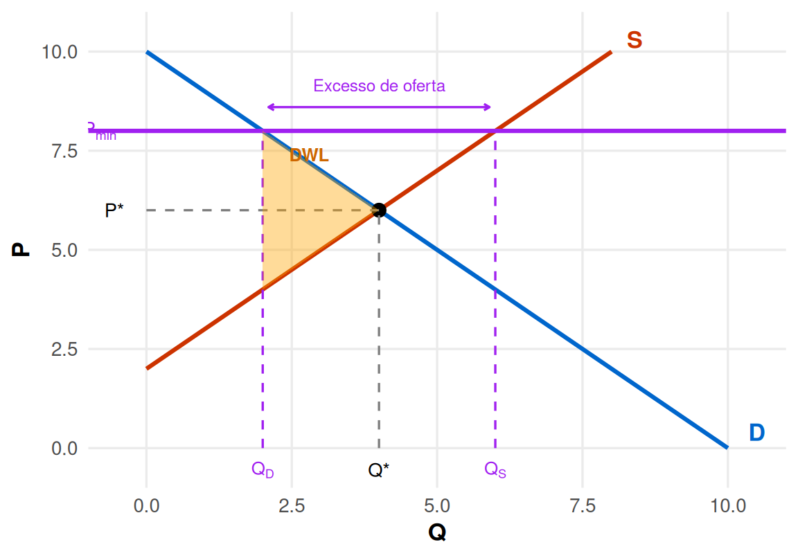
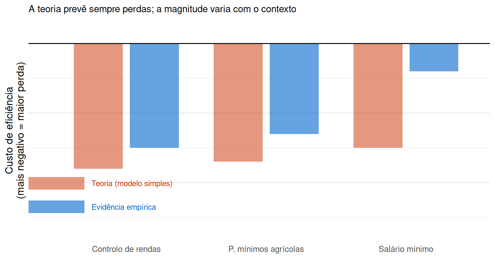

eq_q <- 4; eq_p <- 6
pmax <- 4
qs_ceil <- 2; qd_ceil <- 6
df_d <- data.frame(q = c(0, 10), p = c(10, 0))
df_s <- data.frame(q = c(0, 8), p = c(2, 10))
ggplot() +
geom_line(data = df_d, aes(x = q, y = p), colour = "#0066CC", linewidth = 1.1) +
geom_line(data = df_s, aes(x = q, y = p), colour = "#CC3300", linewidth = 1.1) +
geom_point(aes(x = eq_q, y = eq_p), size = 3) +
geom_segment(aes(x = 0, xend = eq_q, y = eq_p, yend = eq_p),
linetype = "dashed", colour = "grey50") +
geom_segment(aes(x = eq_q, xend = eq_q, y = 0, yend = eq_p),
linetype = "dashed", colour = "grey50") +
geom_hline(yintercept = pmax, colour = "darkgreen", linewidth = 1.1) +
geom_segment(aes(x = qs_ceil, xend = qs_ceil, y = 0, yend = pmax),
linetype = "dashed", colour = "darkgreen") +
geom_segment(aes(x = qd_ceil, xend = qd_ceil, y = 0, yend = pmax),
linetype = "dashed", colour = "darkgreen") +
geom_polygon(
data = data.frame(q = c(qs_ceil, eq_q, qs_ceil),
p = c(10 - qs_ceil, eq_p, pmax)),
aes(x = q, y = p), fill = "orange", alpha = 0.4) +
annotate("text", x = 10.5, y = 0.4, label = "D",
size = 4.5, colour = "#0066CC", fontface = "bold") +
annotate("text", x = 8.4, y = 10.3, label = "S",
size = 4.5, colour = "#CC3300", fontface = "bold") +
annotate("text", x = -0.55, y = eq_p, label = "P*", size = 3.6) +
annotate("text", x = eq_q, y = -0.55, label = "Q*", size = 3.6) +
annotate("text", x = -0.8, y = pmax,
label = expression(P[max]), size = 3.6, colour = "darkgreen") +
annotate("text", x = qs_ceil, y = -0.55,
label = expression(Q[S]), size = 3.4, colour = "darkgreen") +
annotate("text", x = qd_ceil, y = -0.55,
label = expression(Q[D]), size = 3.4, colour = "darkgreen") +
annotate("text", x = 3.0, y = 6.3, label = "DWL",
size = 3.4, colour = "darkorange3", fontface = "bold") +
annotate("segment",
x = qs_ceil + 0.1, xend = qd_ceil - 0.1,
y = pmax - 0.6, yend = pmax - 0.6,
arrow = arrow(ends = "both", length = unit(0.12, "cm")),
colour = "darkgreen") +
annotate("text", x = (qs_ceil + qd_ceil) / 2, y = pmax - 1.1,
label = "Escassez", size = 3.2, colour = "darkgreen") +
scale_x_continuous(limits = c(-1, 11), expand = c(0, 0)) +
scale_y_continuous(limits = c(-1, 11), expand = c(0, 0)) +
labs(x = "Q", y = "P") +
theme_minimal(base_size = 13) +
theme(panel.grid.minor = element_blank(),
axis.title = element_text(face = "bold"))Intervenções nos Mercados: Controlo de Preços
Da teoria à evidência empírica
1 Enquadramento
1.1 O que fizemos até aqui
- Impostos e subsídios são intervenções que actuam sobre o preço de mercado de forma indirecta
- Ambos criam uma perda de excedente total (DWL), cuja incidência depende das elasticidades
. . .
Hoje: o Estado fixa directamente o preço — controlo de preços
. . .
NoteDefinição
Um preço máximo (\(P_{max}\)) impede que o preço suba acima de um tecto fixado pelo Estado. Um preço mínimo (\(P_{min}\)) impede que o preço desça abaixo de um piso. Quando vinculativos, impedem o mercado de atingir o equilíbrio competitivo.
1.2 Motivações políticas
Para fixar um preço máximo:
- Proteger consumidores de preços considerados excessivos
- Exemplos: controlo de rendas, tarifas de energia, medicamentos essenciais, alimentos em tempo de guerra
. . .
Para fixar um preço mínimo:
- Garantir rendimento suficiente a produtores ou trabalhadores
- Exemplos: preços mínimos agrícolas (PAC), salário mínimo nacional
. . .
Important
A economia positiva não diz que estas políticas são “erradas” — analisa as suas consequências. A avaliação normativa depende dos valores da sociedade e dos trade-offs entre eficiência e equidade.
2 Preço Máximo (\(P_{max}\))
2.1 Mecanismo: tecto de preço (no melhor dos casos)
2.2 Efeitos do \(P_{max}\): exemplo numérico
Mercado com \(D: P = 10 - Q\) e \(S: P = 2 + Q\), equilíbrio \(Q^* = 4\), \(P^* = 6\)
Tecto \(P_{max} = 4 < P^*\):
| Competitivo | Com \(P_{max} = 4\) | Variação | |
|---|---|---|---|
| Quantidade transaccionada | \(Q^* = 4\) | \(Q_S = 2\) | \(-2\) |
| Excedente do Consumidor | 8 | \(\leq 10\) † | \(\leq\) +2 |
| Excedente do Produtor | 8 | 2 | −6 |
| Excedente Total | 16 | \(\leq 12\) | \(\geq\) −4 |
† máximo teórico — assume racionamento eficiente (bens vão para quem mais valoriza)
. . .
Important
O EP cai sempre: o produtor vende menos a preço mais baixo. O EC depende de quem recebe os \(Q_S = 2\) bens racionados: se vão para os consumidores com maior WTP (EC = 10 > 8), há ganho; mas com racionamento não-preço (fila, relações pessoais, discrição do vendedor) os bens podem ir para quem os valoriza menos — o EC real pode ser inferior a 8. A DWL mínima é 4 (triângulo entre curvas de \(Q_S\) a \(Q^*\)) e cresce com ineficiência alocativa.
2.3 Consequências não intencionais do \(P_{max}\) (1/2)
Escassez e racionamento não-preço
Quem recebe o bem? Não necessariamente quem mais o valoriza. O racionamento é feito por filas, relações pessoais ou discrição do vendedor — o EC real pode ficar abaixo do valor competitivo.
. . .
Degradação da qualidade
Produtores não podem cobrar mais → reduzem custos de manutenção e qualidade para compensar a margem perdida.
2.4 Consequências não intencionais do \(P_{max}\) (2/2)
Mercado paralelo (mercado negro)
A disposição a pagar dos consumidores excedentários (\(Q_D - Q_S = 4\)) é muito superior a \(P_{max}\) → surgem trocas informais a preços mais altos, muitas vezes ilegais.
. . .
Redução da oferta futura
A menor rentabilidade desincentiva novos investimentos. A longo prazo, a oferta pode contrair ainda mais.
3 Preço Mínimo (\(P_{min}\))
3.1 Mecanismo: piso de preço
eq_q <- 4; eq_p <- 6
pmin <- 8
qd_fl <- 2; qs_fl <- 6
df_d <- data.frame(q = c(0, 10), p = c(10, 0))
df_s <- data.frame(q = c(0, 8), p = c(2, 10))
ggplot() +
geom_line(data = df_d, aes(x = q, y = p), colour = "#0066CC", linewidth = 1.1) +
geom_line(data = df_s, aes(x = q, y = p), colour = "#CC3300", linewidth = 1.1) +
geom_point(aes(x = eq_q, y = eq_p), size = 3) +
geom_segment(aes(x = 0, xend = eq_q, y = eq_p, yend = eq_p),
linetype = "dashed", colour = "grey50") +
geom_segment(aes(x = eq_q, xend = eq_q, y = 0, yend = eq_p),
linetype = "dashed", colour = "grey50") +
geom_hline(yintercept = pmin, colour = "purple", linewidth = 1.1) +
geom_segment(aes(x = qd_fl, xend = qd_fl, y = 0, yend = pmin),
linetype = "dashed", colour = "purple") +
geom_segment(aes(x = qs_fl, xend = qs_fl, y = 0, yend = pmin),
linetype = "dashed", colour = "purple") +
geom_polygon(
data = data.frame(q = c(qd_fl, eq_q, qd_fl),
p = c(pmin, eq_p, 2 + qd_fl)),
aes(x = q, y = p), fill = "orange", alpha = 0.4) +
annotate("text", x = 10.5, y = 0.4, label = "D",
size = 4.5, colour = "#0066CC", fontface = "bold") +
annotate("text", x = 8.4, y = 10.3, label = "S",
size = 4.5, colour = "#CC3300", fontface = "bold") +
annotate("text", x = -0.55, y = eq_p, label = "P*", size = 3.6) +
annotate("text", x = eq_q, y = -0.55, label = "Q*", size = 3.6) +
annotate("text", x = -0.8, y = pmin,
label = expression(P[min]), size = 3.6, colour = "purple") +
annotate("text", x = qd_fl, y = -0.55,
label = expression(Q[D]), size = 3.4, colour = "purple") +
annotate("text", x = qs_fl, y = -0.55,
label = expression(Q[S]), size = 3.4, colour = "purple") +
annotate("text", x = 2.8, y = 7.4, label = "DWL",
size = 3.4, colour = "darkorange3", fontface = "bold") +
annotate("segment",
x = qd_fl + 0.1, xend = qs_fl - 0.1,
y = pmin + 0.6, yend = pmin + 0.6,
arrow = arrow(ends = "both", length = unit(0.12, "cm")),
colour = "purple") +
annotate("text", x = (qd_fl + qs_fl) / 2, y = pmin + 1.15,
label = "Excesso de oferta", size = 3.2, colour = "purple") +
scale_x_continuous(limits = c(-1, 11), expand = c(0, 0)) +
scale_y_continuous(limits = c(-1, 11), expand = c(0, 0)) +
labs(x = "Q", y = "P") +
theme_minimal(base_size = 13) +
theme(panel.grid.minor = element_blank(),
axis.title = element_text(face = "bold"))
3.2 Efeitos do \(P_{min}\): exemplo numérico
Mesmo mercado, piso \(P_{min} = 8 > P^* = 6\):
| Competitivo | Com \(P_{min} = 8\) | Variação | |
|---|---|---|---|
| Quantidade transaccionada | \(Q^* = 4\) | \(Q_D = 2\) | \(-2\) |
| Excedente do Consumidor | 8 | 2 | −6 |
| Excedente do Produtor | 8 | \(\leq 10\) † | \(\leq\) +2 |
| Excedente Total | 16 | \(\leq 12\) | \(\geq\) −4 |
† máximo teórico — assume que vendem os \(Q_D = 2\) produtores mais eficientes (menor custo)
. . .
NoteSimetria notável
O EC cai sempre: o consumidor compra menos a preço mais alto. O EP depende de quais dos \(Q_S = 6\) produtores conseguem vender os \(Q_D = 2\) bens: se forem os mais eficientes, EP = 10 > 8; se não, EP pode ser inferior a 8. Tal como no \(P_{max}\), o excesso de oferta cria um problema de alocação que agrava as perdas de excedente.
3.3 Consequências não intencionais do \(P_{min}\)
Excesso de oferta (stocks acumulados)
\(Q_S = 6 > Q_D = 2\): produtores não escoam toda a produção. Quem vende? Pode não ser o mais eficiente.
. . .
Intervenções secundárias para gerir os excedentes
O Estado pode ser obrigado a comprar os excedentes para manter o preço. Custo para o contribuinte.
Exemplo histórico: «montanhas de manteiga» e «lagos de leite» na Política Agrícola Comum europeia dos anos 1980.
. . .
Redução de incentivos à eficiência e qualidade
Se o preço mínimo elimina a pressão competitiva por preço, reduz o incentivo a inovar e a melhorar.
4 Casos Reais
4.1 Caso 1: Control de Rendas: SFO
NoteDiamond, McQuade & Qian (2019) — American Economic Review
Estudo quasi-experimental sobre a extensão do controlo de rendas a edifícios com ≤ 4 fogos (construídos antes de 1980), após uma reforma legislativa de 1994 em São Francisco.
Resultados principais:
- Inquilinos em casas controladas: probabilidade de permanecer na morada \(\uparrow\) cerca de 20 p.p.
- Senhorios retiraram 15% das unidades controladas do mercado de arrendamento (conversão em condominiums ou demolição)
- Efeito sobre toda a cidade: rendas no mercado não controlado \(\uparrow\) 5,1%
. . .
Important
Exatamente o previsto pela teoria: os inquilinos existentes beneficiam, mas a oferta total cai e as rendas sobem para quem ainda procura no mercado livre.
4.2 Caso 2: Berlim (2020–2021)
- Em fevereiro de 2020, Berlim congelou rendas de ~1,5 milhões de apartamentos (construídos antes de 2014, ~95% do parque)
- O mercado bifurcou-se: apartamentos pós-2014 (não regulados, ~5% do parque) sofreram aumentos de preço imediatos
. . .
- Hahn, Kholodilin, Waltl & Fongoni (2024): anúncios no segmento não regulado dispararam em preço; inquilinos sem contratos existentes pagaram mais, não menos
. . .
- O Tribunal Constitucional Federal alemão declarou o Mietendeckel inconstitucional em abril de 2021
- As rendas voltaram, em geral, aos níveis pré-regulação
. . .
Note
Quando a regulação é parcial, os recursos «fogem» para os segmentos não regulados — agravando a situação de quem não beneficiou do controlo.
4.3 Caso 3: Catalunha — 2020–2022
- Regulação aplicada a municípios com mais de 20 000 habitantes com mercado de arrendamento «tenso»
- Rendas não podiam exceder um cap por tipo de habitação e zona geográfica
- Terminou em março de 2022 (declarado inconstitucional pelo Tribunal Constitucional espanhol)
4.4 Evidência
Evidência (estudos do Banco de España e Fed. San Francisco, 2023):
- Curto prazo: rendas nos segmentos controlados desceram (efeito esperado)
- Número de novos contratos de arrendamento caiu significativamente nos municípios regulados
- Parte da oferta migrou para alojamento turístico (Airbnb) — não sujeito à regulação
. . .
Important
Padrão consistente em três países europeus: controlo de rendas redistribui rendimento a curto prazo, mas contrai a oferta a médio prazo.
4.5 Caso 4: Salário mínimo — o debate empírico
O salário mínimo é um \(P_{min}\) no mercado de trabalho.
A teoria standard prevê: \(W_{min} > W^* \Rightarrow\) desemprego involuntário (\(L_S > L_D\)).
. . .
Mas a evidência empírica é mais complexa:
- Card & Krueger (1994, AER): Aumento do salário mínimo em New Jersey (de $4,25 para $5,05) — sem queda de emprego em fast food vs. Pennsylvania (grupo de controlo); o emprego até aumentou ligeiramente
- Dube, Lester & Reich (2010): usando condados fronteiriços como grupo de controlo, encontram efeitos de emprego próximos de zero para aumentos moderados
- Burkhauser et al. (2022): revisão abrangente — maioria dos estudos encontra efeitos centrados em zero, mas com incerteza considerável
4.6 Porquê diverge da teoria simples?
1. Monopsónia no mercado de trabalho
Se os empregadores têm poder de mercado, o salário competitivo já está abaixo do óptimo. Um salário mínimo pode aumentar emprego até certo ponto — tal como um \(P_{min}\) num mercado com poder de monopólio do comprador.
. . .
2. Custos de rotatividade (turnover)
Com salário mínimo mais alto, os trabalhadores ficam mais tempo nos empregos → menos custos de recrutamento e formação para as empresas.
. . .
3. Efeito nos preços finais
Parte do custo salarial extra é transferida para os consumidores via preços mais altos — o ajustamento não é só via quantidade de emprego.
. . .
Note
O debate empírico sobre o salário mínimo foi reconhecido com o Prémio Nobel da Economia de 2021, atribuído a David Card.
4.7 Síntese: teoria e evidência
df <- data.frame(
politica = factor(
c("Controlo de rendas", "P. mínimos agrícolas", "Salário mínimo"),
levels = c("Controlo de rendas", "P. mínimos agrícolas", "Salário mínimo")
),
teoria_neg = c(-0.9, -0.85, -0.75),
evidencia = c(-0.75, -0.65, -0.20),
label_teoria = c("Escassez + mercado negro", "Excesso oferta + custo Estado", "Desemprego"),
label_evid = c("Escassez + subida seg. livre", "Excesso + migração mercados", "Efeito ~ 0 (variações mod.)")
)
ggplot(df) +
geom_col(aes(x = politica, y = teoria_neg),
fill = "#CC3300", alpha = 0.5, width = 0.35,
position = position_nudge(x = -0.2)) +
geom_col(aes(x = politica, y = evidencia),
fill = "#0066CC", alpha = 0.6, width = 0.35,
position = position_nudge(x = 0.2)) +
geom_hline(yintercept = 0, colour = "black", linewidth = 0.5) +
annotate("rect", xmin = 0.3, xmax = 0.7, ymin = -1.05, ymax = -0.96,
fill = "#CC3300", alpha = 0.5) +
annotate("text", x = 0.75, y = -1.005, label = "Teoria (modelo simples)",
hjust = 0, size = 3.2, colour = "#CC3300") +
annotate("rect", xmin = 0.3, xmax = 0.7, ymin = -1.22, ymax = -1.13,
fill = "#0066CC", alpha = 0.6) +
annotate("text", x = 0.75, y = -1.175, label = "Evidência empírica",
hjust = 0, size = 3.2, colour = "#0066CC") +
scale_y_continuous(
labels = NULL,
limits = c(-1.35, 0.1),
name = "Custo de eficiência\n(mais negativo = maior perda)"
) +
scale_x_discrete(name = NULL) +
labs(title = "A teoria prevê sempre perdas; a magnitude varia com o contexto") +
theme_minimal(base_size = 12) +
theme(
panel.grid.major.x = element_blank(),
plot.title = element_text(size = 11)
)
A teoria standard sobre-estima os custos quando há poder de mercado do lado oposto. A evidência confirma os mecanismos, mas não sempre a magnitude.
5 Discussão
5.1 Controlos de preços justificados? (1/2)
A teoria standard conclui que os controlos são ineficientes em mercados perfeitamente competitivos. Mas há casos que alteram a análise:
1. Poder de mercado (monopólio ou monopsónia)
Se o vendedor/comprador já fixa um preço fora do óptimo, um controlo pode melhorar a eficiência.
. . .
2. Falhas de informação
Em mercados com assimetria de informação severa, a concorrência de preços pode não funcionar.
5.2 Controlos de preços justificados? (2/2)
3. Objectivos distributivos explícitos
Uma sociedade pode preferir aceitar algum DWL para redistribuir de ricos para pobres — decisão normativa, não positiva.
. . .
4. Choques transitórios e emergências
Controlos temporários durante crises podem evitar rendas de extracção (price gouging). O custo de eficiência pode ser menor do que os ganhos de estabilidade social.
5.3 Referências e leituras recomendadas
NoteArtigos científicos citados
- Diamond, R., McQuade, T. & Qian, F. (2019). “The Effects of Rent Control Expansion on Tenants, Landlords, and Inequality: Evidence from San Francisco.” American Economic Review, 109(9): 3365–3394.
- Card, D. & Krueger, A. (1994). “Minimum Wages and Employment: A Case Study of the Fast-Food Industry in New Jersey and Pennsylvania.” American Economic Review, 84(4): 772–793.
- Kholodilin, K.A. (2024). “Rent Control Effects through the Lens of Empirical Research.” Journal of Housing Economics, 63.
- Hahn, A., Kholodilin, K., Waltl, S. & Fongoni, M. (2024). DIW Berlin Discussion Paper 2094.
6 Exercícios
6.1 Exercício de escolha múltipla 1
O Governo fixa um preço máximo \(P_{max}\) abaixo do preço de equilíbrio \(P^*\). Qual das seguintes afirmações está correcta?
- A quantidade transaccionada aumenta relativamente ao equilíbrio competitivo
- Surge um excesso de oferta no mercado
- O excedente total diminui relativamente ao equilíbrio competitivo
- O excedente do produtor aumenta
6.2 Solução — escolha múltipla 1
O Governo fixa um preço máximo \(P_{max}\) abaixo do preço de equilíbrio \(P^*\). Qual das seguintes afirmações está correcta?
- A quantidade transaccionada aumenta ✗ — cai para \(Q_S < Q^*\)
- Surge um excesso de oferta ✗ — surge escassez (\(Q_D > Q_S\))
- C) O excedente total diminui ✓ — há DWL
- O excedente do produtor aumenta ✗ — o EP cai (preço mais baixo, menos quantidade vendida)
Tip
Com \(P_{max} < P^*\), o EP cai sempre. O EC só aumenta se os bens racionados forem para quem mais os valoriza — o que não é garantido. O excedente total é sempre inferior ao equilíbrio competitivo.
6.3 Exercício de escolha múltipla 2
Mercado de trabalho: procura \(W = 20 - 2L\), oferta \(W = 4 + L\). Equilíbrio: \(L^* \approx 5{,}3\), \(W^* \approx 9{,}3\). É fixado um salário mínimo \(W_{min} = 14\). Qual o desemprego involuntário?
- 3
- 7
- 10
- 0 — o salário mínimo não tem efeito porque está abaixo de \(W^*\)
6.4 Solução — escolha múltipla 2
Com \(W_{min} = 14 > W^* \approx 9{,}3\):
- Procura de trabalho: \(14 = 20 - 2L \Rightarrow L_D = 3\)
- Oferta de trabalho: \(14 = 4 + L \Rightarrow L_S = 10\)
- Desemprego involuntário: \(L_S - L_D = 10 - 3 = \mathbf{7}\)
Tip
O desemprego involuntário é \(L_S - L_D\), não \(L_S\). Os trabalhadores empregados são \(L_D = 3\); os que querem trabalhar mas não encontram emprego são \(L_S - L_D = 7\).
6.5 Exercício de desenvolvimento
Mercado de arrendamento: \(D: P = 1000 - 2Q\), \(S: P = 200 + 2Q\) (€/mês; \(Q\) em milhares de fogos).
a) Calcule o equilíbrio competitivo \((Q^*, P^*)\).
b) O Governo fixa \(P_{max} = 400\). Calcule \(Q_S\), \(Q_D\) e a escassez resultante.
c) Calcule o excedente do consumidor, o excedente do produtor e a perda de excedente total (DWL) com o tecto. Confirme que EC + EP + DWL = excedente total competitivo.
d) Com base na evidência empírica (Diamond et al., 2019; Berlim 2020), discuta duas consequências dinâmicas que este modelo estático não captura.
6.6 Solução — desenvolvimento (a) e (b)
a) \(1000 - 2Q = 200 + 2Q \Rightarrow Q^* = 200\) mil fogos, \(P^* = 600\) €/mês
. . .
b) Com \(P_{max} = 400\):
- \(Q_S\): \(400 = 200 + 2Q \Rightarrow Q_S = 100\) mil fogos
- \(Q_D\): \(400 = 1000 - 2Q \Rightarrow Q_D = 300\) mil fogos
- Escassez: \(300 - 100 = 200\) mil fogos
6.7 Solução — desenvolvimento (c)
c) Excedentes com \(P_{max} = 400\), \(Q_S = 100\) (assumindo racionamento eficiente):
| Área | Forma | Cálculo | Valor |
|---|---|---|---|
| EC | trapézio acima \(P_{max}\) sob procura | \(\frac{(1000-400)+(800-400)}{2}\times 100\) | 50 000 |
| EP | triângulo acima oferta sob \(P_{max}\) | \(\frac{(400-200)}{2}\times 100\) | 10 000 |
| DWL | triângulo entre curvas de \(Q_S\) a \(Q^*\) | \(\frac{(800-400)}{2}\times(200-100)\) | 20 000 |
| Total | \(50\,000+10\,000+20\,000\) | 80 000 ✓ |
. . .
Warning
EC = 50 000 é o máximo: assume que os \(Q_S = 100\) fogos vão para os 100 arrendatários de maior valorização. Com racionamento não-preço, o EC real pode ser inferior — a DWL efectiva superior a 20 000.
6.8 Solução — desenvolvimento (d)
d) Duas consequências dinâmicas não capturadas pelo modelo estático:
(1) Contracção da oferta a médio prazo
Os senhorios convertem habitação em outros usos com maior rendibilidade — alojamento local (Airbnb), escritórios, venda. A oferta de arrendamento regulado encolhe. Diamond et al. (2019) estimam uma redução de 15% no parque de arrendamento em São Francisco após a extensão do controlo de rendas.
(2) Degradação da qualidade
Sem possibilidade de aumentar o preço, os senhorios têm menos incentivo a investir em manutenção e renovação. A qualidade do parque habitacional regulado deteriora-se progressivamente.
Tip
Em ambos os casos, o efeito final é o oposto do pretendido: a médio prazo, quem procura habitação a preço acessível encontra menos oferta e pior qualidade.